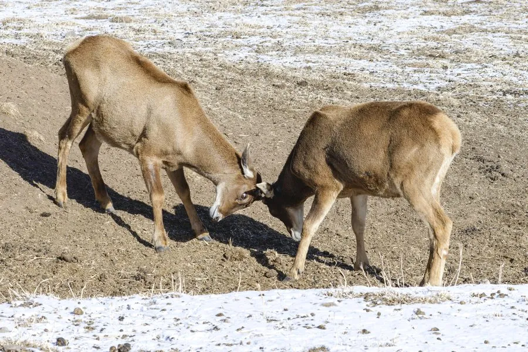

哺乳动物 · 动物界
白唇鹿 Przewalskium albirostre

青藏高原特有的高山鹿类，鼻端至下唇呈纯白色，雄鹿角粗壮分叉多，栖息于海拔三四千米的高寒草甸，是中国一级保护动物。
- 分类
- 门脊索动物门纲哺乳纲目偶蹄目科鹿科属白唇鹿属
- 栖息环境
- 海拔 3500–5000 米的高山草甸、高寒灌丛与裸岩地带
- 地理分布
- 中国青藏高原东部，包括青海、西藏、四川西部与甘肃南部
- 保护级别
- IUCN 易危（VU）；中国国家一级保护动物
物种志
白唇鹿是青藏高原的特有鹿类，体形粗壮，成年体长 1.5–2.1 米，肩高 1.1–1.3 米，体重 130–200 千克，雄鹿明显大于雌鹿。最显著的特征是鼻端、上唇与下唇呈纯白色，与灰褐色的面部形成鲜明对比，故名“白唇鹿”；全身毛色灰褐至黄褐，臀部有大块浅色斑，冬毛厚密并长出长而中空的护毛，保暖性极强。雄鹿角粗大，主干分叉多，最多可分出七八个叉。
它们栖息于海拔 3500–5000 米的高山草甸、灌丛和高寒荒漠，是分布海拔最高的鹿类之一，常结成数只至数十只的群体，冬季可集成上百只的大群，随雪线升降做垂直迁移。食物以高山嵩草、苔草等草本植物为主，也啃食灌木嫩枝。每年 9–11 月发情，雄鹿以吼叫和角斗争夺配偶，次年 5–6 月产仔，每胎一仔。由于栖息地狭窄、曾被大量猎捕，其种群数量有限，中国已建立多个自然保护区加以保护。
形态与习性
- 体长约 1.5–2.1 m，肩高 1.1–1.3 m
- 体重雄性约 150–200 kg，雌性约 100–130 kg
- 食性高山嵩草、苔草等草本为主，兼食灌木嫩枝
- 繁殖9–11 月发情，次年 5–6 月产仔，每胎一仔
- 鹿角雄鹿角粗大，最多可分七八叉，每年脱换
- 栖息海拔约 3500–5000 m，是分布最高的鹿类之一
- 种群现状全球野生个体估计约 1 万只，中国占绝大部分
趣味知识
- 白唇鹿的鼻头和上下唇是雪白的，像在嘴上抹了一道白粉。
- 它是分布海拔最高的鹿类之一，常年在三四千米以上的草甸生活。
- 冬季白唇鹿会长出中空的长护毛，保暖效果堪比羽绒。